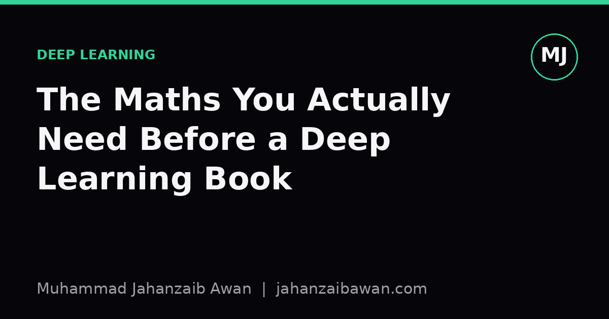

The Maths You Actually Need Before a Deep Learning Book
Most deep learning books assume a working fluency in a small set of ideas. Here is what actually matters and why, with a worked example rather than a syllabus.

The problem with maths prerequisites lists
Open any deep learning book and the preface will tell you to brush up on linear algebra, calculus, and probability. This is technically true and practically useless. It is the equivalent of telling someone learning to drive that they need to understand internal combustion, fluid dynamics, and traffic law. All relevant, wildly disproportionate to what gets you moving on day one.
I have watched people, and been one myself, stall out before chapter two of a deep learning book because they tried to master an entire linear algebra textbook first. The irony is that you need a genuinely small slice of mathematics to follow the reasoning in most modern deep learning material. The slice is narrow but it must be solid, because the book will use it constantly and rarely re-explain it.
What follows is not a syllabus. It is the handful of ideas that, in my experience, unlock almost everything else, plus a worked example that ties them together the way they actually appear on the page.
Vectors, matrices, and what multiplication is doing
You need to be comfortable thinking of a data point as a vector, a list of numbers representing features. An image patch, a word embedding, a row of sensor readings: all vectors. You need to know that a matrix can transform a vector into another vector, and that a neural network layer is essentially a matrix multiplication followed by a small nonlinear twist.
Here is the part that matters more than the mechanics: matrix multiplication is a weighted combination of inputs, repeated many times in parallel. Suppose a layer takes a 3-dimensional input vector x = [2, 1, 3] and a weight matrix with two output rows: [0.5, -1, 2] and [1, 0, -0.5]. The first output is 0.5(2) + (-1)(1) + 2(3) = 1 - 1 + 6 = 6. The second is 1(2) + 0(1) + (-0.5)(3) = 2 - 1.5 = 0.5. That is it. Every dense layer in every book you read is doing exactly this, just at a scale of thousands of inputs and outputs instead of three.
What you do not need, at least not initially, is eigenvalues, singular value decomposition, or matrix rank, unless the book specifically covers dimensionality reduction or certain optimisation proofs. Know what a dot product measures, roughly the similarity in direction between two vectors, and you will understand attention mechanisms, embeddings, and similarity search well before you need anything heavier.
Derivatives, gradients, and the chain rule as a bookkeeping trick
Calculus in deep learning is not about clever integration tricks. It is almost entirely about one question: if I nudge this number slightly, how does the output change? That question, answered systematically, is backpropagation.
Take a tiny worked example. Suppose a model computes y = (wx + b), then a loss L = (y - target)^2, with w = 2, x = 3, b = 1, and target = 5. Forward pass: y = 2(3) + 1 = 7, and L = (7 - 5)^2 = 4. Now the useful bit. The derivative of L with respect to y is 2(y - target) = 2(2) = 4. The derivative of y with respect to w is x, which is 3. By the chain rule, the derivative of L with respect to w is 4 times 3 equals 12. That number, 12, tells the optimiser exactly how much and in which direction to adjust w to reduce the loss. Nudge w down slightly, because the gradient is positive and we want to descend.
This is the entire idea behind gradient descent, repeated across millions of parameters. The chain rule is what lets you compute the effect of a distant parameter on a distant loss by multiplying local derivatives together, layer by layer, backwards through the network. You do not need to derive gradients by hand for anything beyond toy examples; frameworks do this automatically. But if the phrase vanishing gradient or exploding gradient is going to mean anything to you, you need to have internalised that gradients are products of many small numbers, and products of many small numbers can shrink or blow up fast.
Probability, and why loss functions are not arbitrary
The last piece is probability, specifically the idea that a model's output is often best understood as a probability distribution, and that a loss function measures how wrong that distribution is compared to reality. Cross-entropy loss, which appears in almost every classification chapter, is not a magic formula; it is a direct measure of how surprised the model would be if it had to bet on the true label using its own predicted probabilities.
Concretely: if a model predicts a 90 percent chance of the correct class, the cross-entropy contribution is -log(0.9), roughly 0.105, a small penalty. If it predicts only 10 percent chance for the correct class, the penalty is -log(0.1), roughly 2.303, over twenty times larger. This is why training pushes confident wrong predictions down hard and barely touches confident correct ones. Understanding this single relationship explains a large fraction of the behaviour you will see described in a deep learning book's chapters on classification, calibration, and even some failure modes.
You also need a working sense of expectation, the average outcome weighted by probability, because loss functions during training are typically expectations over a batch of examples, not single data points. Beyond that, you can defer topics like Bayesian inference or information theory proper until a book actually asks for them by name.
My honest advice is this: do not pre-study maths in isolation for weeks before opening the book. Learn the vector and matrix operations, the chain rule as a nudge-and-track mechanism, and the probability-as-surprise intuition behind common losses, then start reading and let the book's examples cement them. Mathematics learned right before it is used sticks; mathematics learned in the abstract, months in advance, evaporates. Keep a notebook next to you and re-derive every small numeric example the author gives, by hand, with a calculator if needed. That single habit will do more for your comprehension than any preparatory maths course.